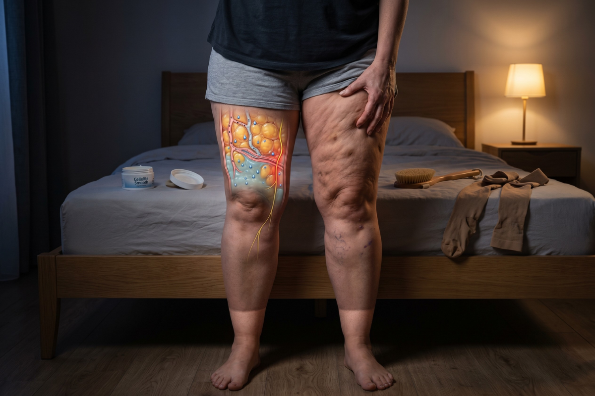
I used to think the cellulite and the heavy, aching legs were two separate things.
Two different problems. Two different battles.
For the cellulite, I tried every cream on the shelf. Caffeine creams. Retinol.
Those silly dry brushing routines everyone on TikTok swears by.
I even bought one of those massage rollers. It left bruises on my thighs.
And for the heaviness? Water pills. Compression stockings. Elevating my legs every night.
I went to my doctor. She looked at my legs and said, "You just need to lose weight."
So I did. I lost the weight. My face got thinner. My arms got smaller.
My legs? Still heavy. Still aching. Still the same size.
Nothing actually worked.
Every summer I dreaded putting on a skirt.
I watched other women my age in shorts and sandals and thought ... how?
How can their legs look like that when mine feel like wet sandbags by 4 in the afternoon?
I stopped wearing anything above the knee. I made up excuses to skip the beach.
My husband kept telling me I looked fine ... but I caught his eyes drifting to my legs when he thought I wasn't looking.
Here's the part I never told anyone.
My legs didn't just look wrong.
They hurt.
Not the skin. Not the muscle. Something in between. A deep ache -- like bruised fruit -- that no cream had ever touched.
Because cellulite doesn't hurt. So what had been hurting me all this time?
Then one night I stumbled on a post from a woman who spent decades making cellulite creams — and it stopped me cold.
She said the dimpled skin and the deep ache weren't two separate problems.
They were two symptoms of the same hidden condition.
And the reason nothing I'd ever tried had worked — not the creams, not the brushing, not the water pills — was that I'd only been treating the surface.
The real problem was sitting deep inside my veins.
She said...
Her name is Margaret Calloway. She spent 27 years developing cellulite creams for the beauty industry.
And for 27 years she watched the same thing happen.
Women bought the creams. Came back. Bought a different one.
She saw the same pattern every single time...
The women with the worst dimpling always had the heaviest, most painful legs. Always.
That wasn't a coincidence. It was a clue.
So she dug into the research. And what she found made her furious at her own industry.
Because the answer had been sitting in medical journals for years.
Vascular. Not cosmetic.
The skin is a barrier. Nothing in a jar gets past it.
But the companies she worked for ignored it. They preferred to keep selling creams that could never reach what was actually going wrong.
They knew the cream sat on the surface. They'd known for decades. And they kept selling it anyway.
Without ever telling you the truth.
That's why Margaret wants every woman whose cellulite aches and whose legs feel like wet cement to understand this...
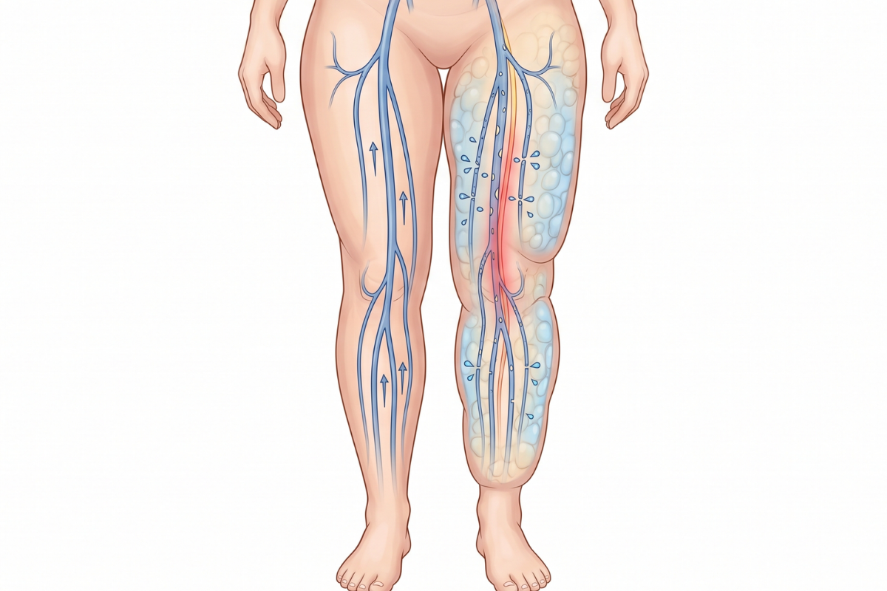
Your legs have a drainage system.
Tiny veins and lymph channels with one job: carry fluid up, out of your legs, back toward your heart.
Think of it like the pipes in your house.
When the pipes are clear and the water flows, everything works. No puddles. No backup. No mess.
But when the flow slows down? Everything backs up.
Margaret calls it "The Trapped Flood."
And here is what most women never hear...
When you're young, those walls are tight and the valves snap shut clean. Fluid goes up -- and stays up.
Then menopause. For decades, estrogen held those walls firm. When it drops, the walls go thin and slack. And they begin to leak.
Not a burst. A seep. Drop by drop, every hour you're upright, fluid slips through the weak walls and pools in your legs.
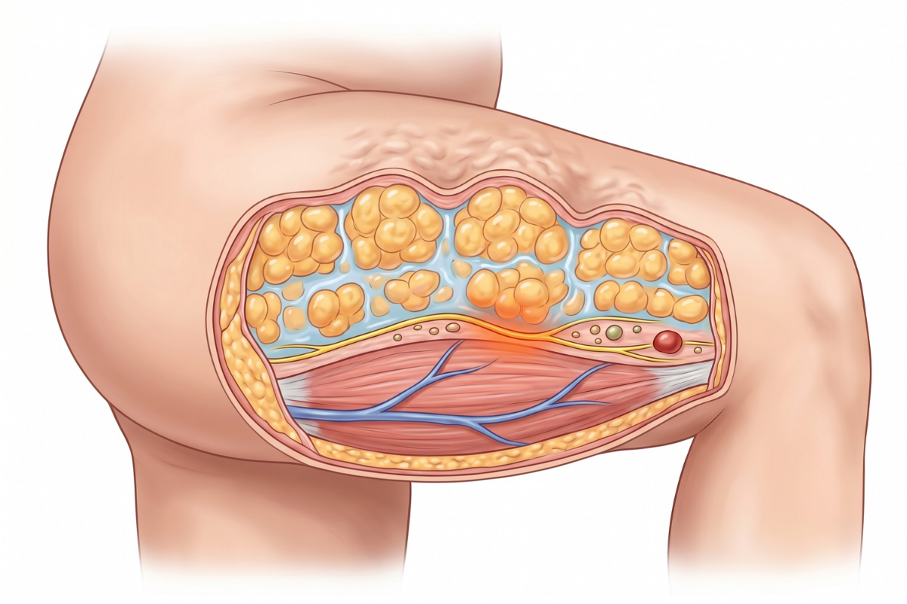
First -- the dimpling.
The trapped fluid swells your fat cells from underneath. Pushes them up against the surface. The skin buckles. Puckers. Dimples.
That bumpy "orange peel" texture on your thighs? That's not a skin problem.
That's your cellulite.
Second -- the ache.
That same trapped fluid presses on the tissue and nerves around it. The longer it sits, the more it pushes. The more it pushes, the more it hurts.
The heaviness that starts in your calves and climbs. The legs that feel like wet sandbags by dinner.
That's your pain.
Two symptoms. One cause. The Trapped Flood.
And here's why that matters...
It's not your fault.
It's not because you're overweight.
It's not bad genes.
And it's not because you don't exercise enough.
Slim women get it. Active women get it. Women who've done everything right get it.
Because the flood has nothing to do with how hard you try. It has to do with what's happening inside walls you can't see and can't control.
You didn't fail your body. Your body's plumbing failed you.
And that changes everything. Because...
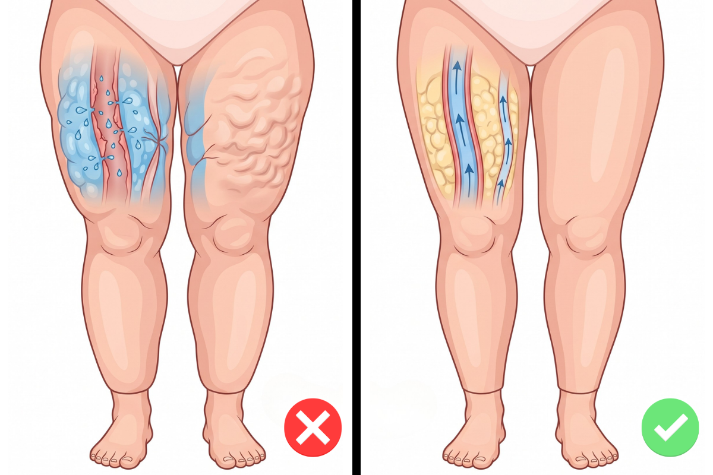
And that's exactly why everything you tried was doomed to fail.
Cellulite creams? That's wiping water off the floor while the pipes are still clogged.
The puddle just keeps coming back.
Dry brushing? You're scrubbing the surface while the clog sits underneath.
Water pills? You're bailing water out of the basement -- but the leak is in the walls. The pills drain the wrong system entirely. Your legs stay swollen.
You can't fix a plumbing problem from the outside.
You have to restore the flow.
And that's exactly what Margaret realized ...
Why not address both problems at once -- the dimpling and the pain?
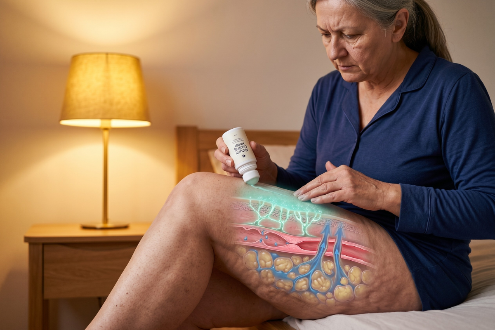
Margaret spent years searching for a way to get the trapped flood moving again ...
Without expensive treatments or risky procedures.
And she found that the answer comes down to three things.
Three things that happen in your legs -- where the problem actually lives.
Think of it like fixing a leaking pipe.
First, you open access to the leak. That's the COOL.
Then you patch the cracks so the walls stop leaking. That's the SEAL.
Then you flush the backed-up water out of the system. That's the DRAIN.
Cool. Seal. Drain. Sixty seconds a day.
And here's how it works ...
Your vessel walls have been leaking for years.
Before you can drain the flood ... you have to stop the leak.
That starts with menthol.
Menthol cools the skin on contact and opens the barrier so active ingredients can reach the vessel walls below.
Think of it like opening the access panel to reach the pipes.
No access ... no repair. Every cream you've tried sat on the surface. Never reached the leak.
Then comes horse chestnut extract with 20% aescin.
Most horse chestnut products have 2 to 5 percent aescin.
This has 20% -- four times the typical concentration.
Why does that matter?
Because aescin tightens the vessel walls. It patches the cracks so fluid stops leaking through.
Like sealing old pipes with industrial-grade sealant ... not bathroom caulk.
And centella reinforces the patch.
It supports the wall repair so the seal holds under pressure. Day after day.
Once the walls hold ... the flood stops building.
And that's when DRAIN does its job ...
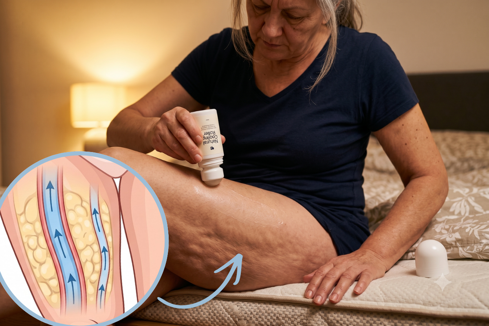
Sealing the walls stops the leak. But the water that already backed up? Still sitting there.
You patch a cracked pipe -- the leak stops. But there's still water pooled on the floor. Somebody has to push it out.
That's what the roller does.
This is the step most approaches miss entirely.
Pills can't move trapped fluid. They flush your kidneys -- your kidneys aren't in your legs. Creams can't reach it.
Only gentle pressure from the outside can guide it back through the drainage channels that swelling had crushed flat.
Sixty seconds a day. You glide it slowly up each leg -- ankle to knee, knee to hip.
No pills. No side effects. Just your hands, a roller, and a roller, and sixty seconds.
Walls hold. Fluid moves. Legs feel lighter. The look of dimpling starts to smooth.
Impressive?
Thousands of women feel the same way.
I spent years on every cream, every gadget. Retinol. Caffeine scrub. The $45 firming cream from the beauty counter. Nothing. So when my sister sent me a link about Cool · Seal · Drain, I thought ... here we go again. But I tried it. Sixty seconds a day. By week three, the dimpling on my thighs looked softer — not gone, but softer than it had been in years. The heaviness I carried all day? Lighter. Week five, my husband looked at my legs and said, "They look really great."
I almost cried.
Still fading. A little more every week.
At 61, I'd given up. Or I told myself I had. My daughter kept pushing — "Mom, just try the ritual." So I did. Sixty seconds a day with the roller. After about two weeks the heaviness started to lift. The ache that woke me at night eased. Last month I wore a skirt to brunch. First time in three years.
At 61.
Not a miracle. Some days are still heavier than others. But I wore that skirt.

Size 6. I hike most mornings — Lookout Mountain, the trails near Red Rocks. And for years every doctor said the same thing: "Just lose weight." I wanted to scream. I was doing everything right — and my legs got worse every single year. I tried the method honestly because I was angry. Around week three my husband said something. This man does not notice haircuts. But he noticed my legs. The dimpling is softening. That deep tenderness after a long hike — it's easing. Not a dramatic before-and-after. Just ... better. First thing that's actually worked.
I stopped wearing shorts. I stopped swimming. I stopped going to the beach. My doctor said it's just aging. Seven years of that. Then I saw someone mention Cool · Seal · Drain. Sixty seconds a day, expecting nothing. After about a month the tenderness in my legs had eased. I could press my calves without wincing. I booked a beach trip — first one in seven years. The dimpling is still there. It's softer though. And my legs don't ache the way they did.
Not how they look. How they feel. That's what matters.
Margaret knew the combination worked. Three ingredients — at the right concentrations — with a roller that follows drainage pathways.
But try putting that together yourself.
Think of it like needing industrial-grade pipe sealant and a professional drainage tool — but the hardware store only carries bathroom caulk and a plunger.
Horse chestnut at 20% aescin. Not the 2–5% diluted into most drugstore formulas. Clinical-grade menthol. Centella in the right form. And a roller built for drainage — not massage.
Too complicated. Too expensive. Too easy to get wrong.
So she helped develop it.
Introducing:
Natural Cooling Roller
She worked with a trusted formulator to put all three Cool · Seal · Drain ingredients into one roller — at the right concentrations — designed to follow the body's drainage pathways.
One roller. Sixty seconds a day.
Not another jar that never reaches the leak — a roller that delivers where drugstore creams never could.
No prescriptions. No clinic visits. No creams that sit on the surface pretending to work.
That's what 27 years of watching women waste money on dead-end products finally turned into.
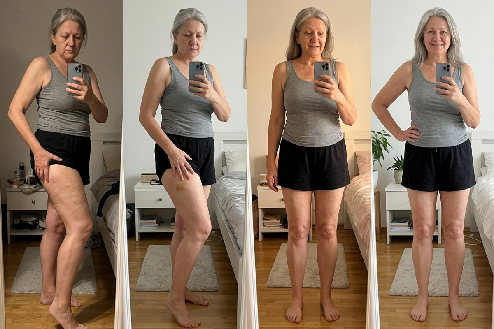
The first few days.
Your legs feel lighter. That heavy, aching feeling you've carried for years starts to lift. Just a little. Enough to notice. Most women feel it before they see anything change. It's the first sign the pressure is finally easing.
By the end of week one.
The tenderness starts to fade. You press your thigh and it doesn't ache the way it did. That tight, angry feeling under the skin? Calmer. Your legs don't throb by evening. That hasn't happened in months.
Weeks two and three.
You look in the mirror and notice something real. The dimpling on your thighs? Smoothing out. Skin looks calmer, smoother. That deep ache you stopped complaining about because no one believed you? Quieter now. Your husband notices. Friends ask what you've been doing.
Weeks four through six.
Hard to miss now. The tenderness that followed you up every staircase — fading. The dimpling that made you dread mirrors — smoothing, week after week. You reach for a skirt without thinking about it. For the first time in years. No tugging at a hemline. No crossing your legs to hide. No more excuses.
You feel like yourself again.
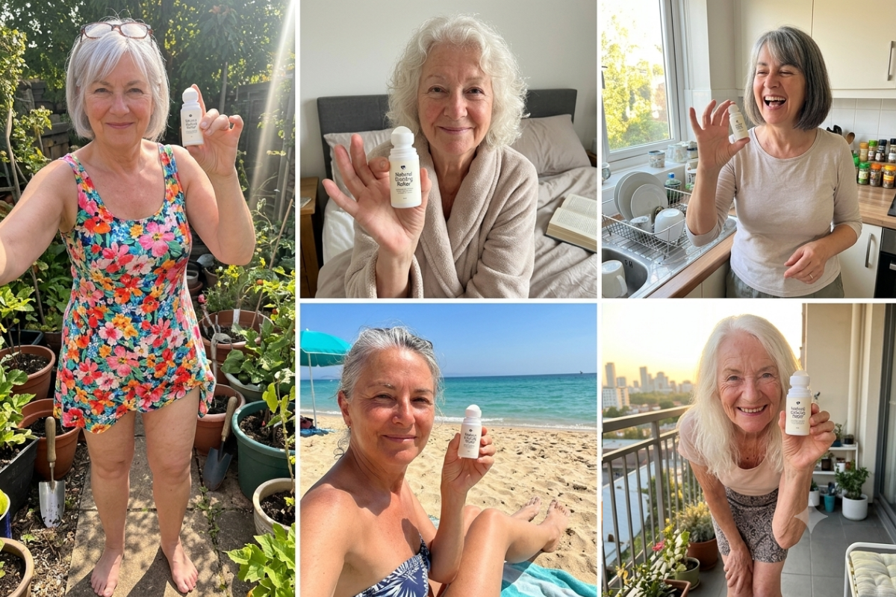
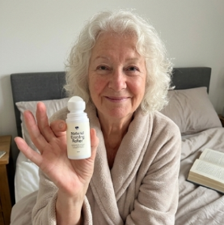
I know what you're thinking. What's the catch?
There isn't one. Margaret put it simply:
"If your legs don't feel lighter... if the dimpling doesn't start to smooth... if the tenderness doesn't ease... you get every cent back."
90 days. Three full months with the Cool · Seal · Drain roller.
No phone calls. No explaining yourself. No fighting with customer service. Send it back — even empty — and your refund is processed. Full. No questions.
Your money is safe. Your decision is completely reversible.
The only thing you're agreeing to is trying it.

The Cooling Roller is one of their fastest sellers. And right now, stock is running low.
The horse chestnut and centella in this formula come from specialized suppliers across Europe. When a batch sells out, it takes weeks to produce more.
And here is something you already know.
The leak doesn't stop just because you think about it.
Every week you wait, more fluid pools. The pressure keeps building. More fat cells get pushed against your skin.
The tenderness gets worse.
The dimpling gets deeper.
The heaviness gets heavier.
And it gets harder to reverse.
You already spent years treating the wrong thing — the creams, the brushes, the pills that never reached the real problem.
Don't spend another summer making excuses to skip the beach while your legs ache underneath a maxi dress.
Go back to the caffeine creams, the compression stockings, the water pills that never reached the real problem.
Keep fighting the dimpling and the ache — two symptoms that won't go away because you're not addressing the drainage underneath.
Give Cool · Seal · Drain 90 days to restart what's been blocked for years. One roller. Completely risk-free.
Margaret knows which one she'd choose. She hopes you choose it too.
Click the button below.
Choose your package.
Enter your details. Ships in 3–5 business days — straight to your door.
Then roll for sixty seconds a day.
That's it. No creams. No pills. No compression. One roller — and walls that finally start to hold.
In 90 days, you could have legs you're not hiding anymore.
Perfect if you want to try it first
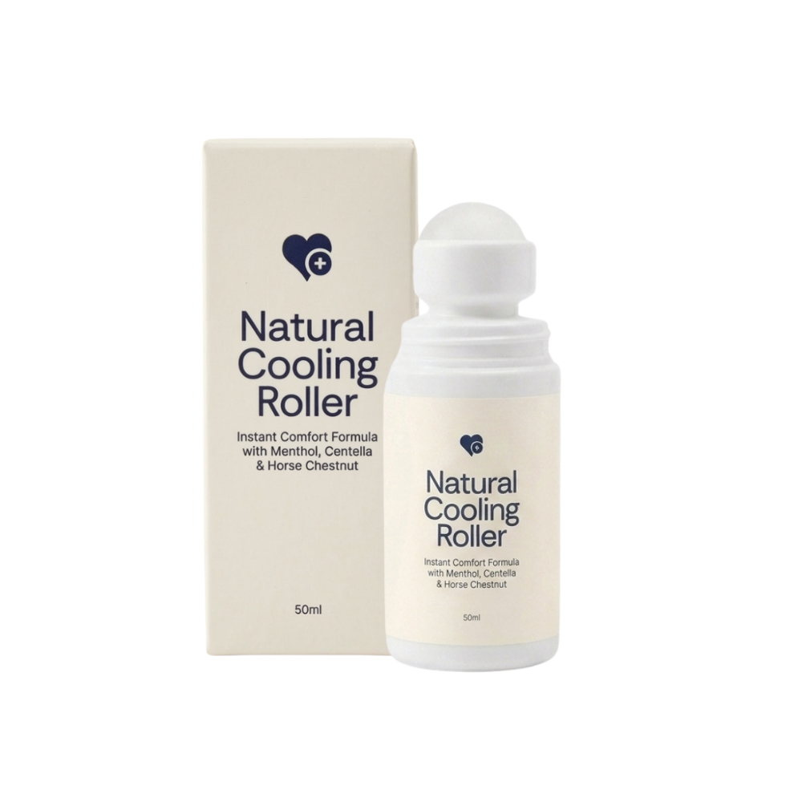
Our recommended supply to see real, lasting results
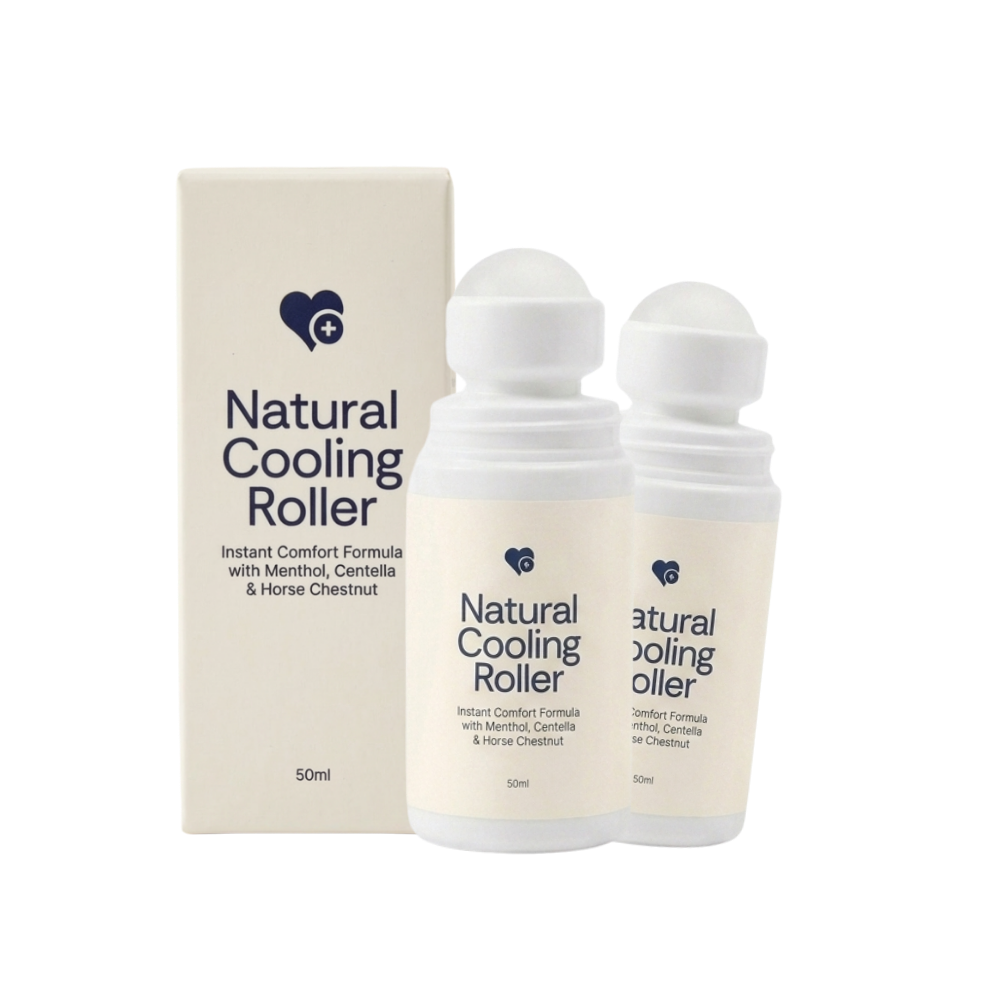
Maximize results and savings with a full two-month supply
US Shipping
Because every one of those treats the surface. The dimpling and the ache start underneath — in leaky vessel walls and sluggish drainage pathways. Fluid seeps out where it shouldn't, pushes fat cells against your skin from below, and puts pressure on the tiny nerves around them. That's both the dimpling you see and the tenderness you feel. No cream can reach your drainage system. You've been wiping water off the floor while the pipes were still leaking.
Because cellulite was never about fat. Ninety percent of women develop it. The real trigger is weakened vessel walls — they deteriorate from hormonal shifts, hours of sitting, and plain aging starting in your early thirties. You can be a size 4 and still have impaired drainage underneath. No amount of squats can fix a vascular problem.
It's the name Margaret gives to what's really happening beneath the surface. Around age thirty, your vessel walls start to weaken. Fluid that should drain away gets trapped instead — pooling in tissue, pressing outward. You'd recognize the signs: dimpling that's worsening year over year. Legs that ache or feel heavy by evening. Tenderness when you press your thighs that wasn't there five years ago. Most women over thirty have some degree of this. They've just been told it's "normal cellulite" and left to deal with it. It isn't normal. And now there's something that actually addresses it.
Water pills force your kidneys to flush fluid. But the fluid trapped around your thighs isn't sitting in your kidneys — it's leaking through weakened vessel walls. Diuretics can't seal those walls. The roller delivers horse chestnut extract to help seal the leaking vessel walls. Centella works to rebuild them from inside. And the roller head itself follows your drainage pathways, helping move trapped fluid toward where it can actually leave. You're repairing the pipes, not just emptying the bucket.
Most women feel a difference before they see one. First few days — your legs feel lighter. That heavy feeling starts to ease. By the end of week one, the tenderness usually starts to fade. Weeks two and three is when the texture of your skin begins looking smoother. By weeks four to six, the difference is hard to miss. Margaret recommends giving the full Cool · Seal · Drain process ninety days. But that first week? You'll know something's different. And that's when most women stop wondering and start telling friends.
Every cream you've tried sits on the surface. It can moisturize, it can temporarily plump the skin, but it physically cannot reach the vessel walls underneath where the real problem starts. The Natural Cooling Roller delivers clinical-grade horse chestnut and centella through the skin along your drainage pathways. It's the difference between painting over a water stain and actually fixing the leak in the wall behind it.
Five, and each one has a job:
- Centella Asiatica 8% — helps rebuild weakened vessel walls from inside
- Horse Chestnut 20% Aescin — helps seal vessel walls so fluid stops leaking out
- Menthol 0.8% — the cooling you feel on contact; also helps open the skin barrier so the other ingredients can reach deeper
- Chamomile 2% — calms inflammation and the tenderness that comes with it
- Ginger 2% — supports healthy circulation in the area
Roll for sixty seconds a day. No prescription needed.
Because The Trapped Flood isn't one problem — it's a chain reaction, and the Cool · Seal · Drain process addresses each step. Menthol cools the skin and opens the barrier so ingredients actually get through. Horse chestnut seals the vessel walls. Centella rebuilds them from the inside. Chamomile calms the irritation. Ginger keeps circulation moving so drained fluid doesn't just pool somewhere else. One ingredient alone is like fixing one link in a broken chain — the chain still fails. That's exactly why single-ingredient creams never delivered for you. This is the full chain, in one roller.
Not even close. Women over sixty often see the most noticeable changes because they've had the longest buildup of trapped fluid. Marie K. dealt with heavy, tender legs for thirty years. Three weeks with the roller and she said it felt like waking up from a long sleep. Your drainage system doesn't have an expiration date. It just needs the right support.
Honest answer: as long as you use the roller, the Cool · Seal · Drain process stays active. If you stop, the underlying triggers — aging, sitting, hormonal changes — don't stop with you. So things can gradually slow down again. That's why most women make the roller part of their daily sixty-second routine. Think of it like brushing your teeth: the benefit lasts as long as you keep showing up. Sixty seconds is easy enough that most women don't stop.
Fair question. Detox products promise to "flush toxins" without explaining how. This is different. The roller delivers targeted, clinical-grade ingredients directly through your skin to the vessel walls and drainage pathways underneath. Horse chestnut and centella have decades of published research supporting vessel-wall integrity. It's not a vague cleanse — it's specific ingredients reaching a specific problem through a specific delivery method. That's why women feel the difference in the first week, not "after a 21-day detox."
Then you get every cent back. Ninety-day money-back guarantee. No questions. You can send the roller back even if it's completely used up. If you don't feel your legs getting lighter, if the tenderness doesn't ease, if the look of dimpling hasn't improved — you pay nothing. We'd rather you try it risk-free than spend another year buying creams that sit on the surface. The guarantee means the only risk is not trying.
Because most doctors aren't trained to look at your drainage system. Heavy legs? They prescribe water pills. Cellulite? They call it cosmetic and tell you to lose weight. The connection between weakened vessel walls and what you see on your thighs isn't part of a standard fifteen-minute appointment. Ingredients like horse chestnut and centella aren't in their prescription pad, so they're not on the radar. Margaret spent twenty-seven years in the industry before she connected the dots herself.
Thirty dollars for one roller. When you think about what most cellulite creams run — thirty to sixty dollars a jar, and you've probably tried half a dozen — this is less than a single jar of most department-store creams. Margaret recommends using it for at least ninety days to give the Cool · Seal · Drain process time to work. That's the cost of two lattes a week for legs that feel lighter and look smoother.
Click the button below. Choose your roller. Enter your details. It arrives in three to five business days. You're covered by the ninety-day money-back guarantee from the moment it shows up at your door. No subscription. No commitment beyond trying it. The only question left is how soon you want to feel the difference.